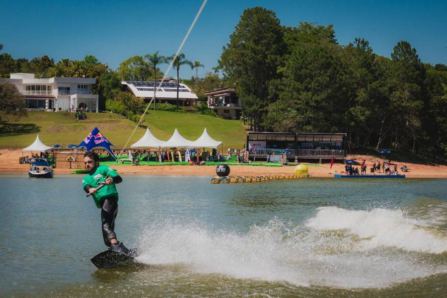

Release para imprensa · divulgação imediata · 16 de outubro de 2026
De disputa de condomínio em 2013 a Campeonato Brasileiro desde 2023, o Ibiúna Wake & Surf volta de 19 a 21 de novembro com atletas de todo o país, barco Nautique G23 e a energia de quem cresceu na beira dessa água.
Ibiúna (SP), 16 de outubro de 2026 — Tem gente que aprendeu a cair e a levantar nessa represa. Em 2013, o que acontecia na Itupararanga era um campeonato local, entre vizinhos dos condomínios que margeiam a água. Em 2022, a disputa virou Campeonato Paulista. A partir de 2023, passou a ser Campeonato Brasileiro de Wakeboard e WakeSurf — e hoje é um dos eventos náuticos mais importantes do país nas duas modalidades.
A edição 2026 ocupa três dias na Náutica Veleiros de Ibiúna: treino oficial no dia 19, eliminatórias no dia 20 e finais com festa de premiação no dia 21, no Bar da Náutica. O barco oficial é o Nautique G23, referência mundial da modalidade e homologado pela Associação Brasileira de Wakeboard. Atrás dele passam do mirim ao profissional, no wakeboard e no wakesurf, com atletas de todo o Brasil e nomes de destaque do circuito.
O público é o da casa e o de fora. Mais de 800 famílias dos condomínios Veleiros de Ibiúna e Porto de Ibiúna acompanham da beira, e a competição segue sendo, também, um fim de semana de convivência. Todo ano sobe o número de crianças que entram na água pela primeira vez. Uma nova geração está se formando — e esse é o objetivo do evento: fazer do wakeboard um esporte reconhecido no Brasil.
Quem abre esse caminho já compete com o mundo. A BRA Wake Team é presença constante nos mundiais da IWWF (International Waterski & Wakeboard Federation) e da WWA (World Wake Association), e volta com atletas no pódio. Marcelo Giardi, o Marreco — ouro nos Jogos Pan-Americanos de 2007 e primeiro latino-americano no top 10 do ranking mundial da WWA —, Henrique Daibert e Felipe Miyamoto estão entre os nomes de reconhecimento internacional ligados a essa trajetória. No Mundial IWWF de 2026, na Itália, Giardi foi campeão e Miyamoto vice no Over 40; Daibert ficou com o bronze no Over 30. Em 2016, no Mundial da WWA em Toronto, a equipe brasileira subiu ao pódio em todas as categorias que disputou.
Inscrições, programação e cobertura estão no site www.ibiunawakeboard.com.br e no Instagram @ibiunawakeandsurf.
| Quando19 a 21 de novembro de 2026 | OndeRepresa de Itupararanga, Ibiúna/SP | BarcoNautique G23 | Siteibiunawakeboard.com.br |
O local fica na Rodovia Bunjiro Nakao, km 82,5, a cerca de 80 km de São Paulo. Como chegar.
O Ibiúna Wake & Surf é o Campeonato Brasileiro de Wakeboard e WakeSurf da Represa de Itupararanga. Começou em 2013 como campeonato local, tornou-se Paulista em 2022 e, desde 2023, é Brasileiro — um dos campeonatos náuticos mais importantes do Brasil em wakeboard e wakesurf.
Imprensa: Leandro Pereira Pinto · leandro@hellonext.com.br · (11) 93316-5193
Site: www.ibiunawakeboard.com.br
·
Instagram: @ibiunawakeandsurf
Imagens, vídeos e credenciamento sob demanda.